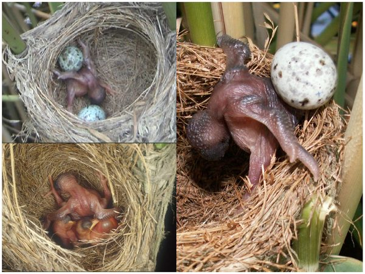
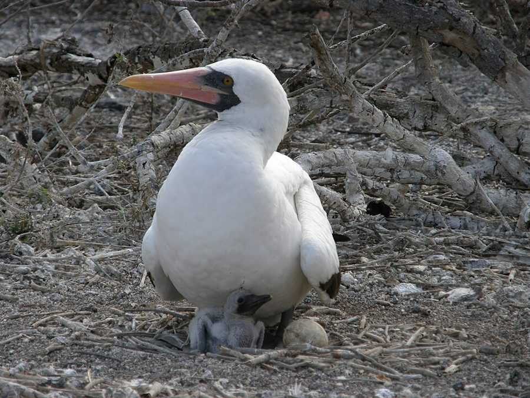
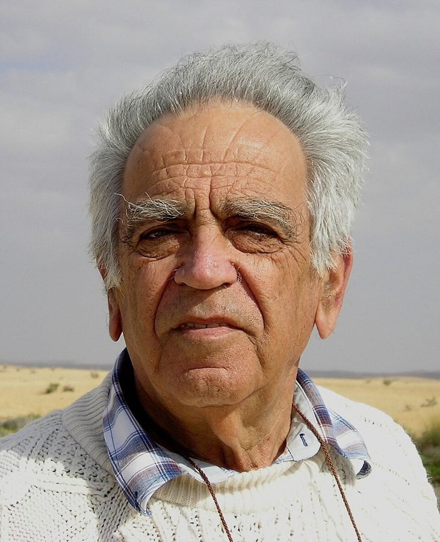
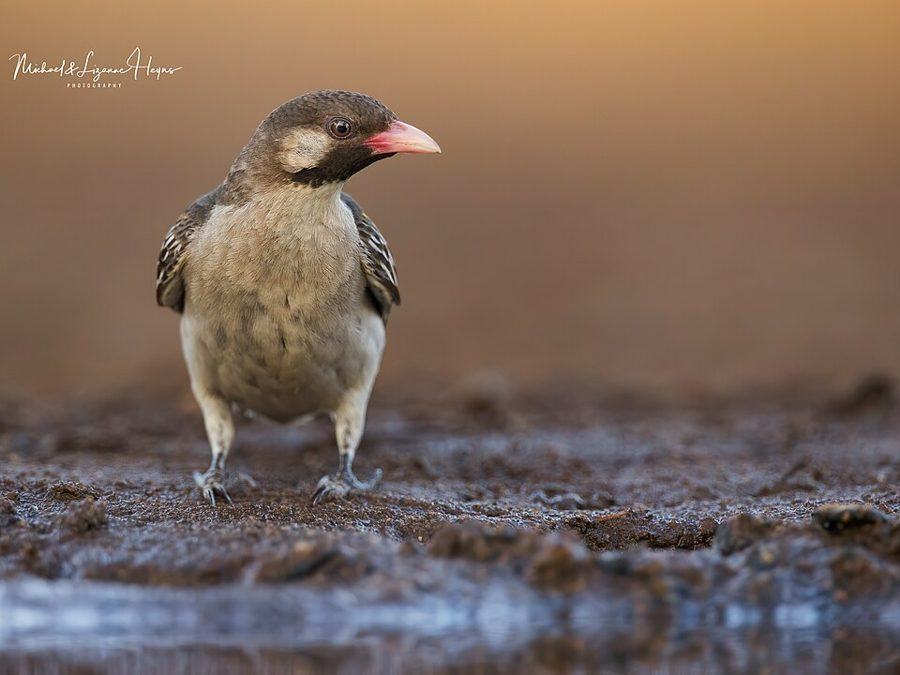
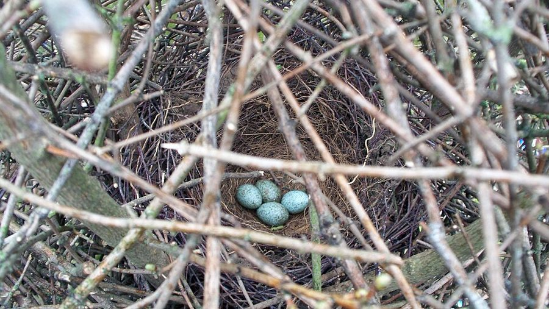

lose no opportunity of
… will lose no opportunity of cheating.
不放过任何……的机会
字面「不丢掉机会」，就是一有机会就骗。第 44 段作者回头引这句时写成 should，并说明这个 should 不是道德判断。
第 8 章的后半。上半页算清了母亲和孩子的两本账，这半页问：账对不上的时候，孩子拿什么争，父母怎么防，最后谁说了算。Dawkins 用到 Zahavi 的「讹诈」、布谷鸟和响蜜䴕的雏鸟、一只把喜鹊蛋推出巢的雏燕，再拿 Alexander 的「父母必胜」来辩。读的时候抓两条线：哪些是观察，哪些是作者自己都存疑的假说；「骗」「应该」都是比喻。

上半页停在第 22 段：母亲多下一个蛋，给年景两头下注。第 23 段作者换了口吻，说这是一场「代际之战」，从冲突的道理转到双方的战术。第 25 段说某些布谷鸟雏鸟根本没有养兄弟姐妹、原因后面再讲，第 29 段兑现。第 33 段回指第 7 章 Lack 的窝卵数，第 35、40 段回到上半页 Trivers 的两倍界线。第 44 段预告下一章讲配偶之间的冲突。
孩子争得过父母吗？如果父母总能赢，这一章讲的冲突还有没有意义？
读的时候带着这几个问题。不用先找答案，读完回来对照「检查一下理解」。
这一页先讲手段，再讲输赢。§5 从比喻起步，第 23 段又一次说明是「好像有目的」，列出孩子会撒的谎，接着借来 Zahavi 的讹诈假说，作者一面讲一面怀疑，第 26–28 段停下来把它翻回基因语言自检一遍。§6 从假说转到实打实的残忍：响蜜䴕和布谷鸟的雏鸟，再到西班牙一只雏燕的怪事；作者先排除两种解释，再提出一个他自己都说不大可能的猜想，读到这里会觉得跳，用意到第 35 段才交代。§7 换成和另一位理论家辩论：先把 Alexander 的话倒过来说，再换一个角度算账。§8 承认父母的实际优势，列出孩子的几张牌，落在「没有通用答案」，最后一段是全章的声明。
作者落在哪：孩子会骗，但只骗到损害亲属超过亲缘允许的那一点；布谷鸟的狠是每个家庭里都有的自私的极端版。亲子之间没有遗传上的不对称，谁赢没有通用答案，结果是双方的妥协。书里的「应该」不是道德主张。
这一页是原书第 8 章的第 5–8 节。原书各章没有小标题，粗体的节名是本站起的，下面是这一节第一段开头的几个词，在电子书里搜它就能跳过去。读完打个勾。
先把这一页用到、作者默认你懂的几个概念讲一遍。讲的是概念本身，作者拿它推出什么，读原书时自己看。前面讲过的亲缘关系指数、巢寄生、最适窝卵数、亲代投资、亲子冲突，点进去看。
同一窝的兄弟姐妹之间直接置对方于死地，鸟类里研究得最多，代表人物是美国鸟类学家 Douglas Mock。分两类。一类是「必然型」：纳斯卡鲣鸟和不少雕类一窝下两个蛋，两只都孵出来时，先出壳的那只几乎总会把弟妹赶出巢或啄死，第二个蛋像是给第一个蛋上的保险。另一类是「看情况型」：一些鹭类只在食物不够时才下手。它和巢寄生的雏鸟杀死养兄弟姐妹不是一回事：受害的是亲兄弟姐妹，和凶手有一半基因相同，按亲缘的账，凶手得到的好处要大得多才划算。

在这一页：第 32–35 段。作者猜雏燕也会推掉弟妹的蛋，他自称这个猜想不大可能。译本：「杀兄弟姐妹」
Richard Alexander 1974 年提出：父母掌握着食物和照料，可以把子女塑造成对父母的基因有利的样子，哪怕这对子女自己不利。他拿它解释社会性昆虫的不育职虫：也许不是职虫自己「选择」帮忙，而是母亲让它们只能帮忙。它和亲属选择是两种解释：亲属选择说，帮助亲属的倾向被选择，是因为它对帮忙者自己体内的基因有利；亲代操纵说，只要对父母的基因有利就够了。打个比方：员工加班，可以因为手里有期权，是自己的利益；也可以因为老板说了算，是老板的利益。
在这一页：第 36 段：作者说如果 Alexander 对，利他行为就多了一个来源，所以要先弄清他错在哪。注 43 又替这个想法找了一条新理由。
演化生物学的术语，指一个个体留下后代的多少，也就是繁殖上的成功，和身体健康、健身都无关：一只健壮却不生育的动物，适合度是零。「适者生存」里的「适者」也是这个意思。Hamilton 1964 年又提出「广义适合度」（inclusive fitness），把亲属的繁殖按亲缘加权算进来。程序员熟悉的遗传算法里，「适应度函数」用的就是这个词：给每个候选解打分，分高的多留后代。
在这一页：第 37 段 Alexander 的原话里用了它，作者随即解释；第 39 段说他全书有意不用这个词。译本：「健康水平」，见译本勘误。
按在书里出现的顺序排，标题前是节号。只讲到读懂这一页需要的程度。

第 24 段转述 Zahavi 的一个想法：雏鸟故意叫得让天敌听见，逼父母多喂。作者给它打了劫机者的比方，随即说自己怀疑：雏鸟把自己的命看得比母亲看它重一倍，兄弟姐妹的命也有它一半的份，招来天敌划不来。Zahavi 最出名的是 1975 年的不利条件原理，下一章讲；2006 年的导言里，作者说自己后来改信了这个原理。

响蜜䴕是非洲和亚洲热带的一类小鸟，译本：「指蜜鸟」。大响蜜䴕会把人引到野蜂巢，名字由此而来；它也像布谷鸟一样把蛋下在别的鸟巢里，宿主多是在土洞、树洞里筑巢的鸟，比如蜂虎。第 29 段说它的雏鸟喙尖带钩，出壳后看不见、身上没毛，就用这个钩把同巢的宿主雏鸟啄死。英国常见的大杜鹃用的是另一招：孵化期短，先出壳，用背上的凹处把宿主的蛋驮出巢外（见页首的照片）。

Fernando Alvarez、Luis Arias de Reyna 和 Segura 1976 年在《动物行为》（Animal Behaviour）上发表的研究，在西班牙做。喜鹊在那里是大斑凤头鹃这种布谷鸟的宿主，他们往野外的喜鹊巢里放各种蛋和别种鸟的雏鸟，看喜鹊认不认得出外来者。论文摘要说，放进去的家麻雀、纯色椋鸟、寒鸦和燕子的雏鸟都被喜鹊收养，有的雏鸟还会除掉巢里的竞争者。第 30 段讲的就是其中一只雏燕。作者说这是他「过去一年」听到的最惊人的事之一。
Alexander 1974 年在《生态学与系统学年评》（Annual Review of Ecology and Systematics）上发表长文 The Evolution of Social Behavior，主张亲子冲突里父母总会赢，子女的利他可以出自亲代操纵。第 37 段引号里是作者节录的那段原话，第 38 段把它原样倒过来说。注 43 说，Alexander 1980 年在《达尔文主义与人类事务》（Darwinism and Human Affairs）里承认，说父母必胜能从达尔文主义的基本假设推出，是错的。
注 43 引的是 Charnov 讲社会性昆虫不育职级起源的论证，作者把它推广到一般的情形：女儿是留在家里帮母亲带亲弟妹，还是出去自己生。下面「尾注」一节细讲。
按节排，每节前面是分节地图里的节名。标着「每个字都认识」的，是熟词生义、习语和反话，最容易读错。灰色的那几个字是原句里的位置，在电子书里搜它就能找到。
对着中译本（40 周年增订版）读的时候看这一节。下面是译本这几节和这一页尾注里会让人读错的地方：灰字是英文原文那一处的几个词，在英文电子书里搜它；方框里是译本的原句，在译本电子书里搜它。措辞别扭但意思没错的不收。全书的勘误汇总在译本勘误。
… right up to the point where it …
译本：「甚至滥用亲缘关系做出不利于其亲属的行为」
原文说孩子撒谎、哄骗、利用，一直用到损害亲属超过亲缘所允许的那一点为止。这是一条界线，就是上半页讲的两倍界线。译本读着像孩子不顾亲缘、损害亲属，意思正好少了「到此为止」。
… whether it could ever be favoured …
译本：「我怀疑这种策略是否有利于进化」
原文是：作者怀疑这种策略能不能在演化中被选择出来，原因是它对讹诈的雏鸟本身划不来。「进化」不是受益的一方。
… holding a pistol to your brother’s head …
译本：「因为它自己所冒的风险不会太大」
这一句后面原文还有一句作者的比方：小雏鸟招来专叼大雏鸟的天敌，好比拿枪顶着哥哥的头，而不是威胁把自己炸掉。它和前面劫机者的比方是一对，译本没译。
… foster brothers and sisters co-exist alongside …
译本：「能够和同胞兄弟或姐妹共同生活的布谷鸟」
原文是 foster brothers and sisters，和布谷鸟同巢、毫无亲缘的宿主雏鸟，同一段前面译本也作「同奶兄弟」。「同胞」是亲兄弟姐妹，正好是反的。布谷鸟讹诈说得通，靠的就是它和这些雏鸟没有亲缘。
… could be to make the cries louder.
译本：「但事实确是这样」
原文说在「假设的」布谷鸟例子里，天敌的净作用可能是让叫声更响。译本删了「可能」，又加上「事实确是这样」。下一段作者明说正反都没有证据。
… It seems to me just conceivable that …
译本：「这是可以推断出的」
just conceivable 是「勉强可以想象」，作者把握很小。译本成了「可以推断出」，像是推理的结论。同一段后面的 could be 也被译成了肯定的「是合算的」。
… But each baby wants more than his …
译本：「它只要能摔掉一只蛋，就能分到」
原书的分数是图片。译本电子书在这四处用的是同一张「1/5」的图：前两处（每只雏燕想要多于 1/5 的份额）是对的，后两处错了：推掉一个蛋分到的是 1/4，再推掉一个分到 1/3。译本的「再分到」是总共 1/3，不是另加。
… a gene for fratricide could conceivably spread …
译本：「在基因库中是会扩散开来的」
原文有 conceivably，是「可以想象会扩散」。译本成了肯定句。这整段是作者自称不大可能的猜想，限定词一丢，读着就像定论。
… suggesting such an improbable idea as the …
译本：「这种罕见行为的假设」
improbable idea 是「不大可能成立的想法」，说的是作者对自己猜想的评价。「罕见行为」的意思是这种行为有、只是少见，等于把猜想当成了事实。这是全页最要紧的一个限定。
… what must go on in any family.
译本：「任何一个鸟巢里都会发生这种情况」
原文说布谷鸟的残忍只是每个家庭里都有的那种自私的极端版。译本读着像每个鸟巢里都有手足相残。作者下一句正好说：就算不信会演化出公然的手足相残，程度轻得多的自私也一定很多。
… has the special technical meaning of …
译本：「提高处在青少年时代的个体健康水平的基因」
fitness 是演化生物学的术语「适合度」，指繁殖上的成功，原文这一段还特意解释过。译本第 37–39 段一律译成「健康水平」，读着像在讲身体好坏。
… This argument is not obviously wrong, …
译本：「这个论点显然并不错误」
not obviously wrong 是「看不出明显的错」，作者只是不急于否定 Alexander 的实际论点。译本成了「显然没错」，口气从保留变成了肯定。
… rewarding to a rat in a maze.
译本：「正像食物到肚对一只迷路的老鼠」
原文是心理学实验里走迷宫的老鼠，走对了就得到食物。这里的 rewarding 是条件反射意义上的奖赏：孩子的笑会「训练」母亲。译成「迷路的老鼠」，这层意思就没了。
… be employed by a parent’s own young …
译本：「有许多也可能为其同胞兄弟或姐妹所使用」
原文说布谷鸟的欺骗和利用，父母自己的孩子也可能用，只是不会像布谷鸟那样完全自私。这是全章的结论之一，译本把使用者换成了「同胞兄弟或姐妹」。
… This chapter, and the next in which …
译本：「做出布谷鸟那种极端自私的行为」
译本第 8 章到这一句就结束了。原文后面还有一整段：这一章和下一章读来冷酷，但说的不是有意识的动机，「应该」不是道德主张；如果要引出对人的教训，那就是要教孩子利他。全书最常被引的句子之一就在这段。
… Alexander has generously conceded, in his …
译本：「亚历山大勉强承认他的主张是错误的」
generously 是「大方地」，不是「勉强」。译本后半句又读成 Alexander 声称父母获胜符合达尔文主义。原文是：他承认，说父母必胜能从达尔文主义的基本假设必然推出，是错的。
… seems to me that his thesis, that …
译本：「他的毕业论文描述亲代在世代争斗中」
thesis 在这里是「论点、主张」，指 Alexander「父母有不对称的优势」这个主张，和学位论文无关。作者说这个论点可以用 Charnov 的论证撑起来。
There is really only one entity whose point of view matters in evolution, and that entity is the selfish gene.— §7 第 39 段。本站译：演化里真正要紧的视角只有一个，那就是自私的基因。
这是作者驳 Alexander 的落点，也是全书最直白的一句纲领。口气是认真下判断。关键词是 point of view：他不是说基因有观点，是说算账要站在基因这一层，Alexander 站在父母一边、他自己倒过来站在孩子一边，都会算错。同一个基因先后住在孩子和父母的身体里，各用各的杠杆，所以亲子之争没有谁天生占优。
If there is a human moral to be drawn, it is that we must teach our children altruism— §8 第 44 段。本站译：如果要从中引出一条对人的教训，那就是我们必须去教孩子利他
全书最常被引的句子之一，译本漏了。原句后半说，因为不能指望利他是孩子生物天性的一部分。常被读成「作者说人天生自私」，要留意两处：开头是条件句；同一段前面他刚说过「应该」不是道德主张。2006 年的导言收回了第 1 章「我们生来自私」那句，请读者在心里删掉它「和类似的句子」，本站看来，这半句属于这一类（见第 1 章）。
正文里的星号是 1989 年第二版加的，点了跳到书后的尾注。下面是这一页的每个星号：注里说了什么，值不值得现在就点开。英文是星号前紧挨着的几个词，在电子书里搜它就能找到那个星号。
… the parent will always win.*
Alexander 已承认「父母必胜」推不出来。作者却半步改口：父母占优可以换 Charnov 的论证来撑。一夫一妻的物种里，女儿留下帮母亲带亲弟妹和出去自己生，对她的基因一样值钱，她无所谓；母亲却在乎，因为子女比孙辈值钱一倍。只有一方在乎，那一方就容易赢。作者强调这是「其他条件相同」的论证，各物种条件不同；正文「没有通用答案」没撤。值得点开。
读完这一页的几节再看。下面是作者在这几节里的论点，由本站按论点重新组织，不按原书的顺序；每条下面是依据所在的段落，拿不准就回书里那几段再读一遍。
在「个体好像有目的」的比喻下，孩子会夸大饥饿、扮小、装危险，直到损害亲属超过亲缘允许的那一点。父母定量喂也不行，孩子可能真饿。孩子知道自己多饿，父母只能猜，小谎几乎识不破。本来对父母有用的信号，如微笑和呼噜，一旦成了奖赏，也会被孩子用来多拿。
§5 第 23 段，§8 第 41–42 段作者认为讹诈对普通雏鸟划不来：它看重自己的命，也看重兄弟姐妹的命。只在天敌专叼最大雏鸟时也许说得通；对和养兄弟姐妹毫无亲缘的布谷鸟雏鸟更说得通，他把这一条翻回基因语言核了一遍。他也说，布谷鸟是否真这样做，正反都没有证据。
§5 第 24–29 段响蜜䴕和布谷鸟的雏鸟杀死或推走养兄弟姐妹是事实，西班牙那只推蛋的雏燕也是真实观察。作者排除了「对付布谷鸟」和「清理巢」两种解释后，猜雏燕也许是在推弟妹的蛋，但承认没法解释为何没人见过。他提这个猜想只为一个道理：亲兄弟之间的自私和布谷鸟只差在程度。
§6 第 29–35 段Alexander 说自私孩子长大后会被自己的孩子坑，所以父母必胜。作者把这话倒过来说，得出孩子必胜，以此表明两种推法都站在一个个体上看，都错；要从基因看。他又换个算法：自己将来的孩子和弟妹一样只算一半，Alexander 说的代价只是账上多一项，父母不天生占优的结论不变。
§7 第 36–40 段父母更大更强，这一点作者认为不明显错；但孩子握有信息上的牌。结局落在双方理想之间，像布谷鸟和宿主之争的温和版。最后一段说，「应该」不是道德主张；如果要对人引出教训，就是利他得靠教。（1989 年的注 43 补了一种父母占优的情形：一夫一妻、其他条件相同时，女儿留不留巢，母亲容易赢。）
§8 第 41–44 段，注 43合起来：这半页把上半页的两倍界线变成了行为：说谎、讹诈、推蛋，都只是「多拿一点」的不同程度。作者要读者带走的是：家里的冲突真实存在，却没有天生的赢家，最后是讨价还价出来的妥协。
第 8 章合起来：作者先借 Trivers 的亲代投资给父母的付出记账：母亲和每个孩子亲缘相同，只按孩子用得上多少来偏心，停经也可能是转投孙辈，他只当作一种可能。孩子却把自己算作弟妹的两倍，所以在一段范围里总想多要，冲突是量上的。下半章讲孩子的手段，从夸大饥饿到作者存疑的讹诈和手足相残，再驳「父母必胜」：亲子之间没有遗传上的不对称，结果是妥协。全章的「应该」都不是道德主张。
这本书 1976 年出版。下面挑出这一页里能被后来的研究检验的说法，分「书里 / 当时 / 今天」三栏，并给一个结论。结论判的是标题里「书里的说法：」后面那一句。全书的这一节汇总在对照今天。
读完作者的论点，再看它站不站得住。每一块摆出三样：主流怎么看，作者怎么看，本站的评论。最后一句是本站对这一页的总体判断。
主流看法：发展心理学的研究不支持「利他不在天性里」：Warneken 和 Tomasello 2006 年在《科学》上报告，18 个月大、刚会说话的幼儿，看到大人够不着东西，多数会主动去帮。研究者一般认为助人的倾向出现得很早，之后再被教养和文化塑造。
作者的看法：第 44 段先说「应该」不是道德主张，再用条件句说：如果有对人的教训，就是利他得教。2006 年导言收回了「生来自私」和类似的句子，说教人利他没错。
本站的评论：「教孩子利他」这半句没问题，问题在理由。作者自己第 6 章就讲了亲属选择，这一章又说父母对孩子的照顾正是基因的账，这些都在生物天性里。从「基因自私」推出「孩子天性不利他」，跳过了他自己 1978 年后才分清的复制因子和载体。作者 2006 年在导言里承认的正是这一步。
主流看法：鸟类的手足相残有大量记录，Mock 等 1990 年的综述把它分成必然型和看情况型，响蜜䴕的杀戮也拍到了。但本站没有查到后来有研究证实雏燕会推掉弟妹的蛋。
作者的看法：他自称手足相残假说不大可能，没法解释为何没人见过；提它只为说明布谷鸟的狠只是程度上的极端（第 32–35 段）。讹诈也是他存疑的（第 24、29 段）。
本站的评论：作为讲解，这个手法有效：用一个极端的猜想逼读者看到「亲兄弟之间也有利益冲突」。那个一般道理不靠雏燕：鲣鸟、雕的手足相残都能撑住它。风险是读者记住了故事，忘了「不大可能」，译本又把这些限定词丢了。读这一节，把观察、作者的推理和他的猜想分成三层。
主流看法：驳得倒那个「必然」：Alexander 1980 年自己收回了。后来的研究不再问谁天生占优，而问在具体的物种里谁控制资源和信息（Parker、Royle 和 Hartley 2002）。
作者的看法：亲缘从哪头算都是一半，只站在一个个体上看会出错；父母的实际优势「不明显错」，但孩子有信息上的牌，所以没有通用答案（第 38–43 段）。注 43 又借 Charnov 承认，在女儿留不留巢这件事上母亲可能赢。
本站的评论：倒过来说是个好用的工具，相当于做一次对称性检验：一个论证换掉主角还成立，说明它没抓住真正的不对称。作者驳的是遗传上的「必然」，这一点赢了。真正的答案在他承认「不明显错」的实际不对称里，后来的研究正是往那里走的。注 43 的改口显出他的公允，但 Charnov 的论证只管一个决定，别把它读成「父母总会赢」。
本站的总体看法：这一页值得带走的是「没有天生的赢家」和「从基因算账」这两点，后来的研究都站在它们一边。讹诈和雏燕手足相残要打大折扣，作者自己就说不大可能。第 44 段那句教训，条件和理由都要连着读，理由那半句和作者 2006 年收回的「生来自私」是同一类说法。
先在心里答，再点开。答错的那题，回书里把对应那一节再读一遍。
雏鸟对自己的命算全份，母亲只算它一半，它比母亲更输不起；同巢的兄弟姐妹它也各占一半的份。所以招天敌对它自己最亏。只有天敌专叼最大的雏鸟时，小雏鸟也许能拿这个威胁哥哥姐姐。
布谷鸟雏鸟和同巢的养兄弟姐妹毫无亲缘，天敌来了它只赔自己一条命，养母却可能赔掉几个亲生的，所以养母多喂它划算。作者没确认：第 29 段说正反都没有证据。
一是对付布谷鸟，二是清理坏蛋和杂物。两种情况下，这件事都该由更有力气的成年燕子来做，不该落在弱小的雏燕身上。所以他推测，从父母的角度看，雏燕在干坏事。
从 1/5 变成 1/4，再变成 1/3。它不推光，是因为别的雏燕和它有一半基因相同，它不像布谷鸟那样想要全部。
不是。他明说两种说法都过于简单，倒说只为表明这种站在一个个体上的推法不成立。他的结论是亲子之间没有遗传上的不对称，要从基因看。
这个词让人习惯从个体的角度想问题，而他认为演化里要紧的视角是基因。Alexander 和他自己倒过来的说法，都是从某个个体看出的错。
一夫一妻时，女儿带亲弟妹和自己生孩子对她的基因一样值钱，她无所谓；母亲看子女比孙辈值钱一倍，她在乎。只有一方在乎，那一方就容易赢。前提是一夫一妻、只看亲缘、其他条件相同。
用一句话说这一页，写给一个没读过的人。
想一想：你和父母，或者你和自己的孩子，有没有过一种「大方向一致、只在多少和早晚上争」的分歧？那时候谁手里的牌多一些，最后是怎么落下来的？
读过又忘了，从这里想起来。挑的是这一页最值得记住的模型、动物和说法，不按原书顺序；每条后面是节号，想细看就回书里那一节。全书各页的这一节都收在全书回顾。
一句话：孩子会骗父母，但只骗到亲缘允许的那一点；亲子之间没有天生的赢家，结果是妥协。
大杜鹃雏鸟先出壳，把宿主的蛋一个个驮在背上顶出巢外；响蜜䴕雏鸟用钩喙把养兄弟姐妹啄死。作者说这只是家家都有的自私的极端版。
§6Zahavi 设想雏鸟故意大叫招天敌，逼父母多喂。作者怀疑，普通雏鸟太输不起；只对布谷鸟也许说得通，而且正反都没证据。
§5西班牙实验里一只雏燕学布谷鸟把喜鹊蛋推出巢。这是真观察；「雏燕会推弟妹的蛋」是作者的猜想，他自己说不大可能。
§6Alexander 说父母必胜，作者原样倒过来，得出孩子必胜，以此表明两种推法都错：亲缘从哪头算都是一半，要从基因看。
§7父母又大又强，但只有孩子知道自己多饿，小谎识不破；微笑和呼噜成了对父母的奖赏，也就成了孩子多拿的工具。
§8全章最后一句，条件句，译本漏了这段。2006 年作者收回了「生来自私」那类说法，说教人利他没错。
§8